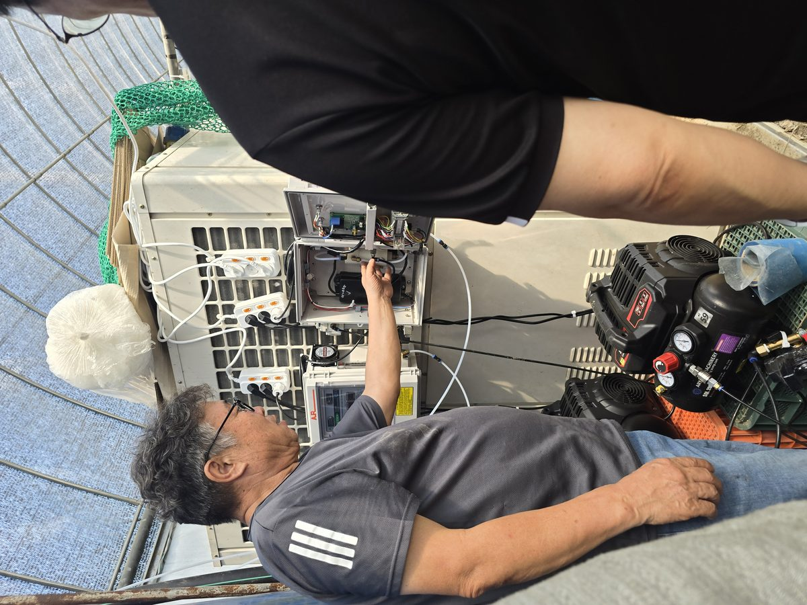
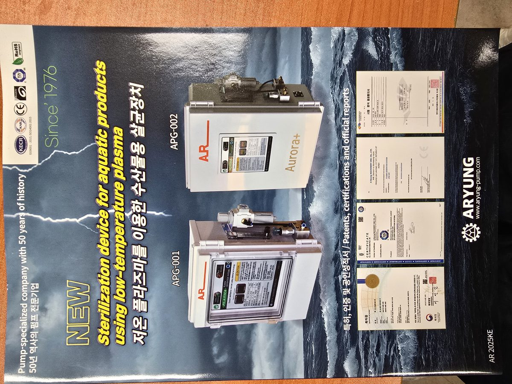
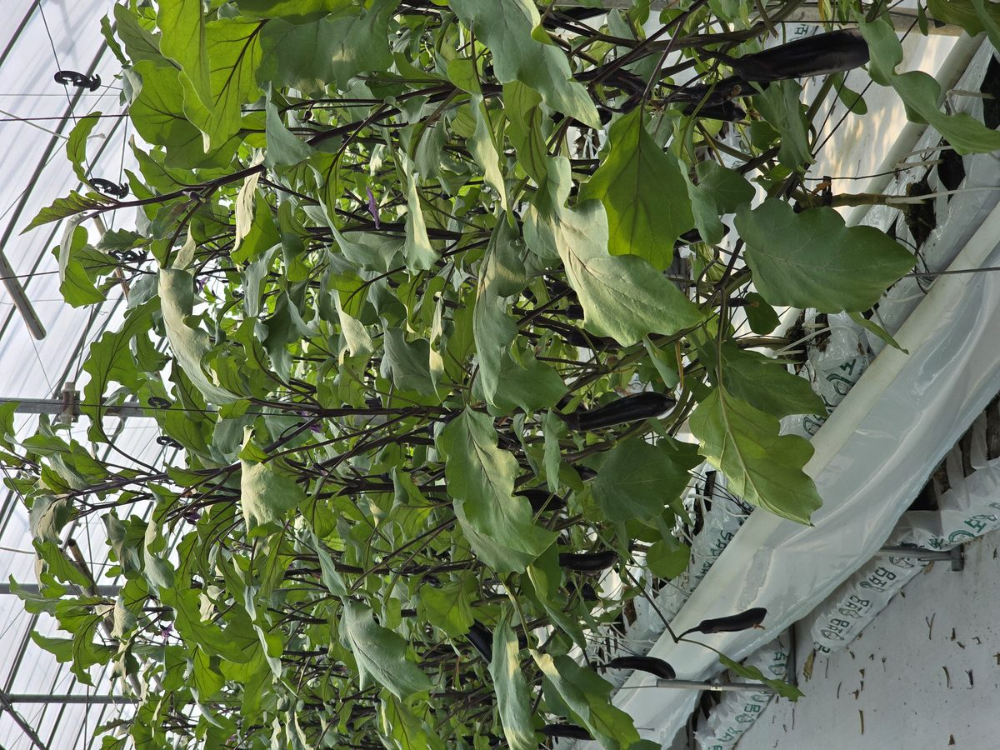
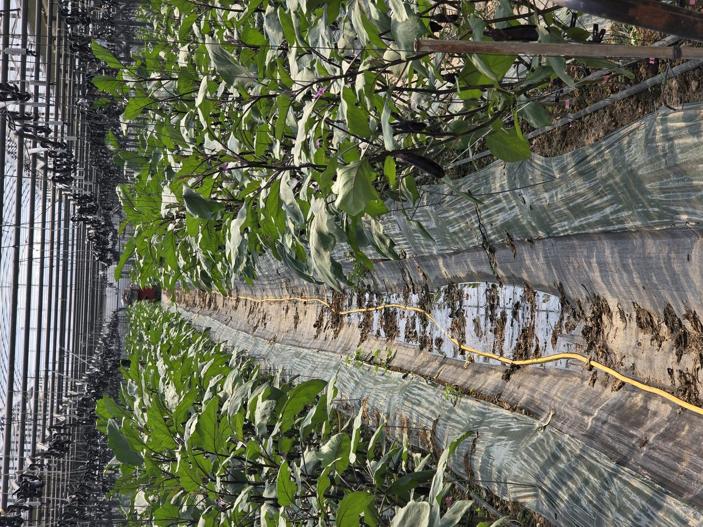
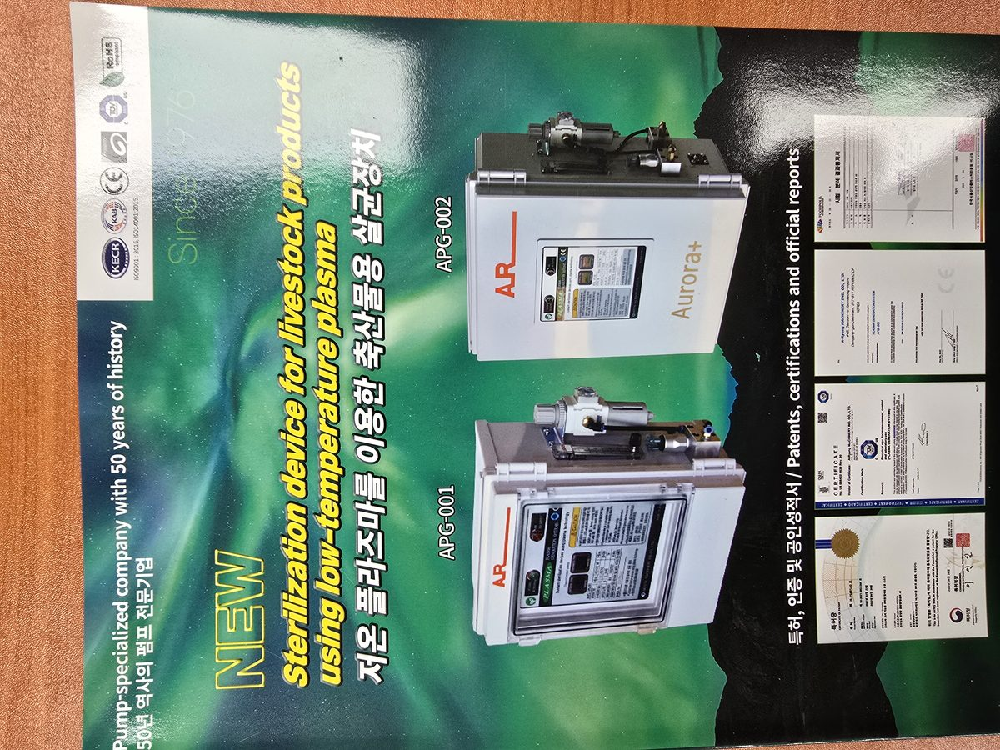
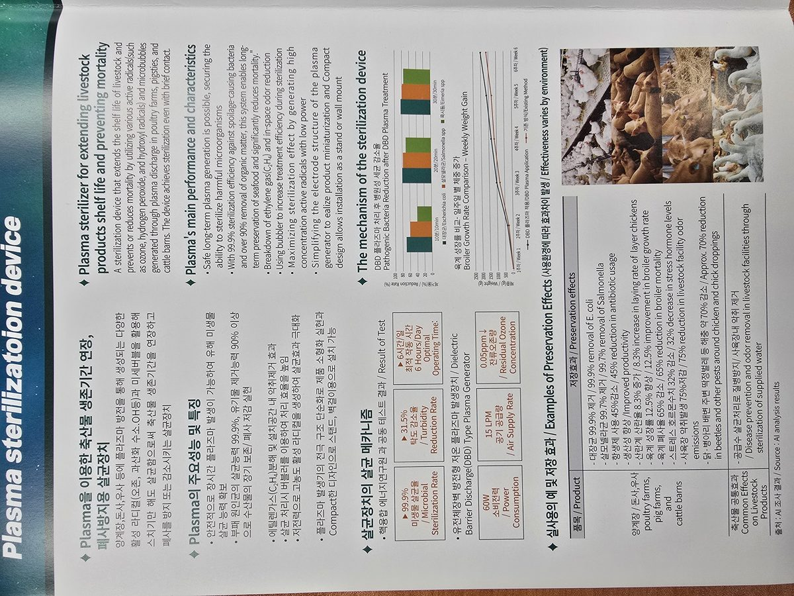
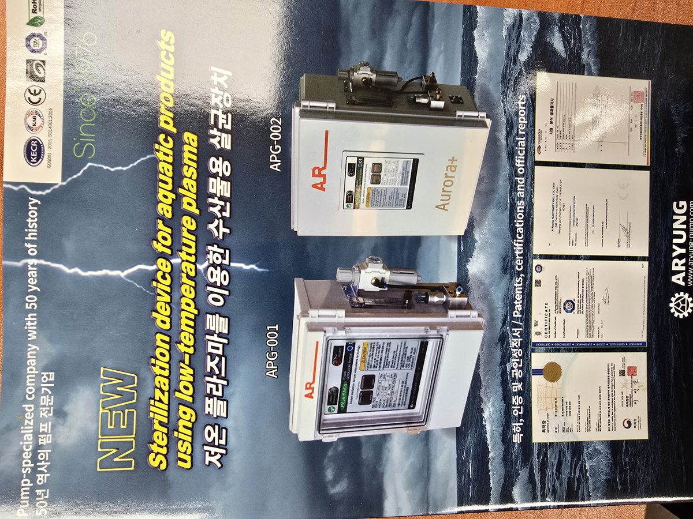
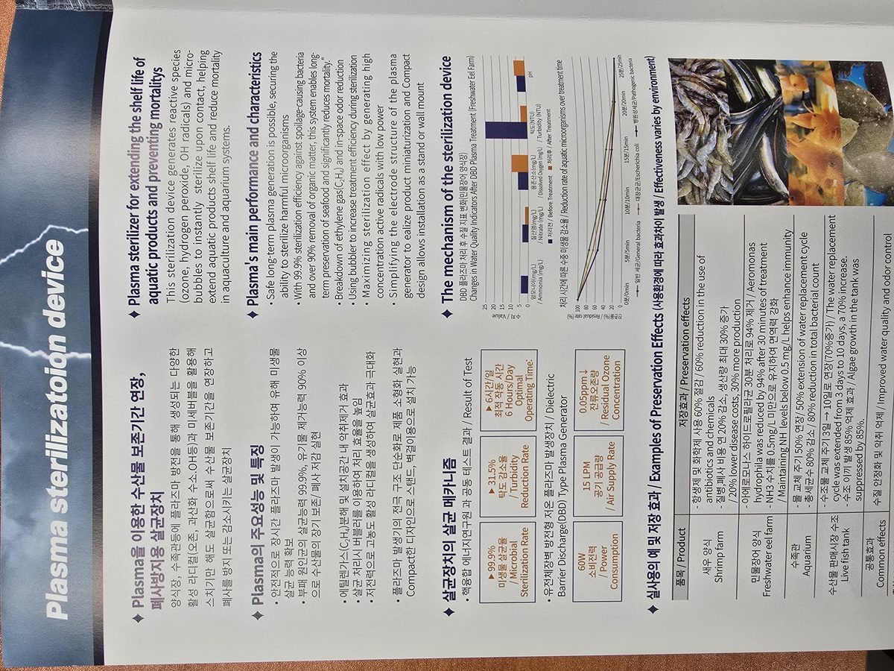
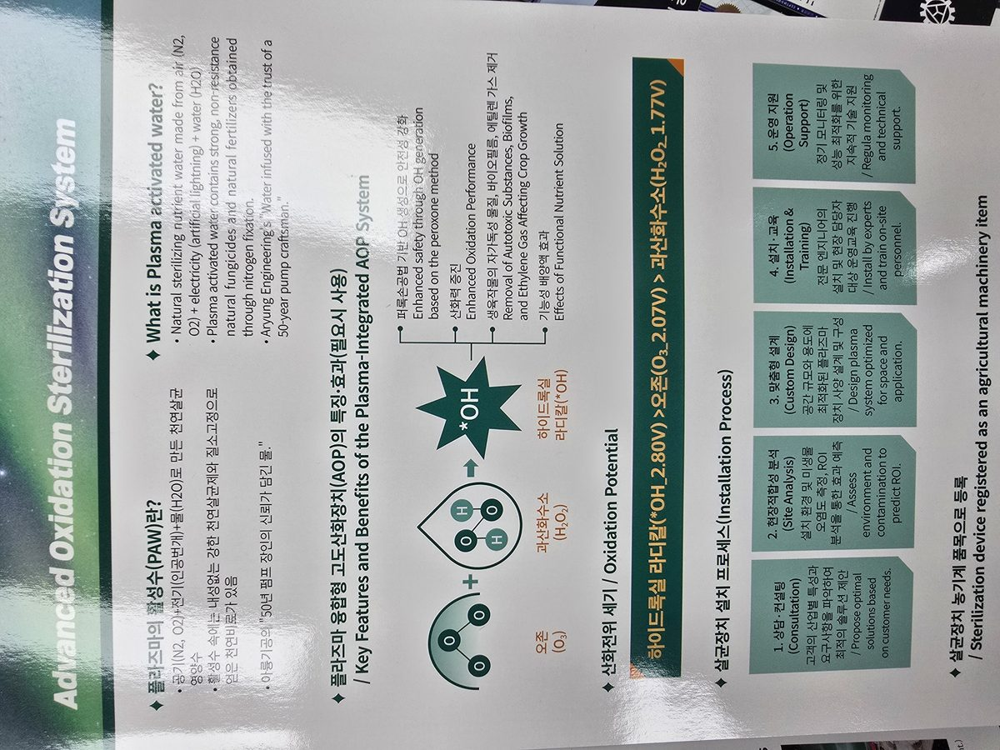

말뿐인 설명이 아닌, 현장에서 직접 장비를 설치하고 눈으로 효과를 증명해 보입니다.

안녕하십니까, 아륭기업 플라즈마사업팀 총괄본부장 이종선입니다.
대한민국 50년 정밀 유체기계 역사를 자랑하는 아륭기업의 저온 플라즈마 기술은
하우스 곰팡이병·탄저병 방제, 축산 급수 배관의 고질적인 물때(바이오필름) 완벽 제거, 돈사 악취 제거, 양식장 어류 폐사율 격감에 이르기까지 현장에서 탁월한 실증 성과를 내고 있습니다.
저온 DBD 플라즈마 활성수(PAW) 생성 기술로 99.9% 강력 살균 및 유기물 분해

국내 특허 & CE 인증| 적용 전원 | AC 220V, 50/60Hz 단상 |
|---|---|
| 정격 소비전력 | 60W (연중 가동 시에도 전기료 월 몇천원 수준) |
| 공기 공급 능력 | 최대 15 LPM 내장형 펌프 |
| 플라즈마 방식 | 저온 유전체 장벽 방전(DBD) 고효율 셀 |
| 안전 장치 | 과열 보호 센서, 과전류 퓨즈, 누전 차단 회로 |
| 설치 호환성 | 기존 관수 파이프라인, 음수 라인, 저장조 직결 가능 |
농업, 축산, 수산, 공업 현장의 고질적인 난제를 단번에 해결합니다.
아륭 플라즈마 활성수를 공급한 시설하우스의 왕성한 엽록소와 탄력 있는 작물 품질

뿌리 활착력이 눈에 띄게 좋아지고, 잎의 두께와 색택이 짙어져 광합성 효율이 극대화됩니다. 관수 파이프 내에 이끼나 바이오필름이 끼지 않아 영양분이 균일하게 공급됩니다.

기존에 발생하던 탄저병과 흰가루병 발병률이 현저하게 떨어져 농약 살포 횟수가 절반 이하로 줄어듭니다. 수확물의 저장 기간이 대폭 늘어나 출하 시 최고 등급 가격을 받습니다.
폐사율 감소, 약품비 절감, 폐유 처리비 절감으로 검증된 실제 데이터
폐사율 78% 감소로 인한 수확량 증대 및 환수 횟수 단축으로 4개월 만에 장비 도입 비용을 완전히 회수합니다.
배관 물때 청소 비용 제로, 항생제 투약 45% 절감, 악취 민원 해소 및 증체율 향상으로 6.5개월 내 손익분기점을 돌파합니다.
탄저병·흰가루병 방제 농약값 절약, 저장 중 썩는 손실 68% 감소 및 상품 가치 상승으로 1시즌 내 투자비를 회수합니다.
전화 한 통이면 이종선 총괄본부장이 직접 방문하여 최적의 솔루션을 설계해 드립니다.
이미지를 클릭(터치)하시면 고화질로 상세 스펙과 성적서를 크게 보실 수 있습니다.

🔍 확대보기
🔍 확대보기
🔍 확대보기
🔍 확대보기
🔍 확대보기플라즈마 시스템 도입 전 가장 많이 질문하시는 내용입니다.
연락처를 남겨주시면 이종선 총괄본부장이 직접 확인 후 신속히 연락드립니다.